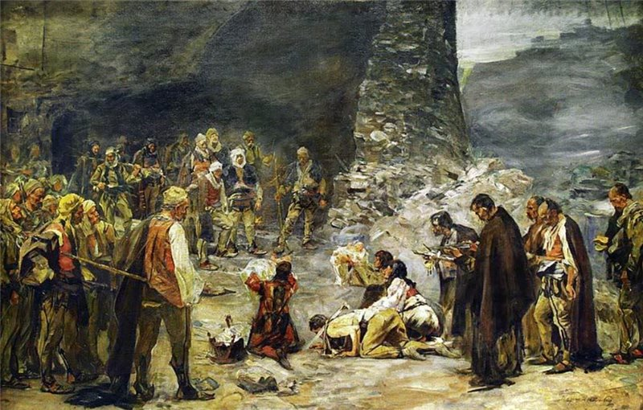
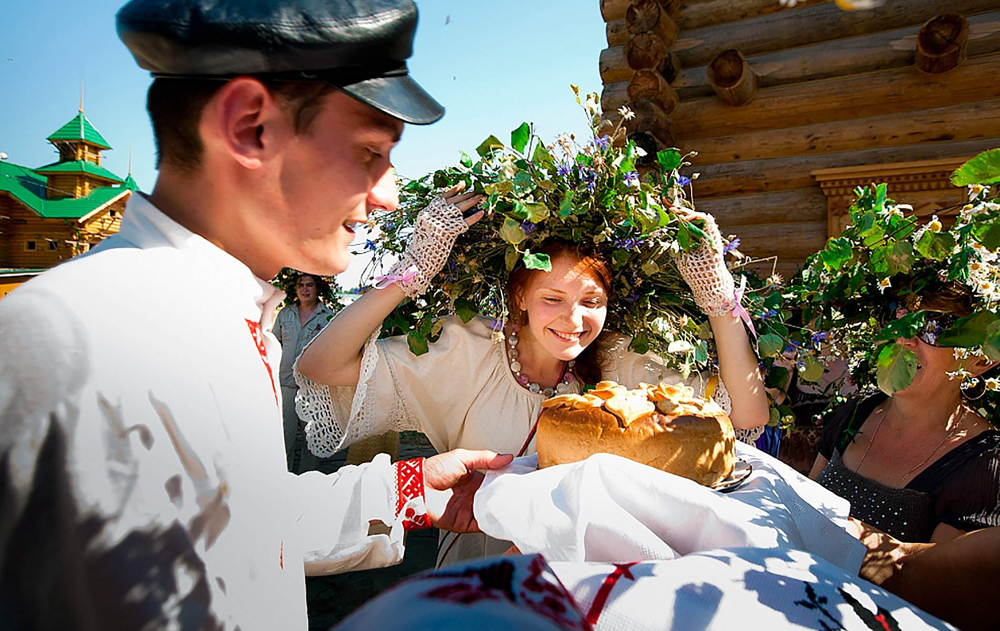

Справка
Народ Республики Ингушетия - это народ с богатой историей, культурой и традициями.
Ингуши являются адыгским народом, проживающим в гористой местности на Северном
Кавказе. Быт народа Ингушетии тесно связан с природой, скотоводством и земледелием.
Традиционные занятия включают пастушеский образ жизни, выращивание скота, а также
производство сыров и меда.
Традиции
Уважение к родителям и старшим.
Уважение к родителям и старшим. Правила этикета включают такие обязательные
нормы, как: уступить дорогу старшим, право старших говорить первыми, обязанность
не перебивать и не вмешиваться в разговор старших и прислушиваться к их советам.
Кровная месть.

Кровная месть. Она была обязанностью всей фамилии, но в первую очередь близких
родственников — членов рода. Иногда мщение тянулось годами, переходя из
поколения в поколение
Свадебные традиции

Свадебные традиции.
Свадебное празднество происходило в доме жениха и
продолжалось несколько дней.
Факты
-
Из всех субъектов Российской Федерации Ингушетия является самой маленькой
республикой. Её площадь – всего 3123 км², что примерно равно площади всей суши
Французской Полинезии. И народу тут проживает немного, чуть более 0,5 млн человек, то
есть столько же, сколько в Липецке или Кирове. Впрочем, ситуация может измениться в
будущем, так как темпы прироста населения здесь выше, чем во всей остальной России.
-
Самоназвание ингушей – Галга (примерно так это слово произносится в русском языке), а
русское название республики происходит от названия села Ангушт. Что интересно,
находится это село не в Ингушетии, а на территории современной Грузии.
-
Город Магас, столица Ингушетии – самая молодая и самая маленькая из всех столиц
субъектов РФ, а также один из немногих городов в современной истории, основанный
специально для того, чтобы взять на себя столичные функции. В нём живёт чуть более
10.000 человек, около 2% от общей численности населения республики.
-
В преимущественно исламской Ингушетии находится самый древний православный храм в
России, которому уже около 1100 лет. Это Тхаба-Ерды, каменное сооружение, и до сих пор
никто не знает, кто его построил. В XX веке он не выполнял религиозных функций, и
первое за сотню лет богослужение прошло здесь в 2012 году.
-
В XX веке одно время роль ингушской столицы выполнял Владикавказ, и это был
уникальный случай, потому что он в то же время являлся столицей Северной Осетии. Ни до
этого момента, ни после больше не было такого, чтобы один и тот же населённый пункт
выполнял столичные функции для двух республик одновременно.